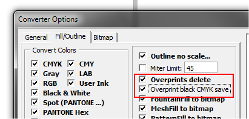
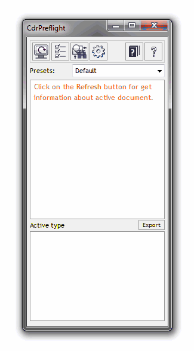
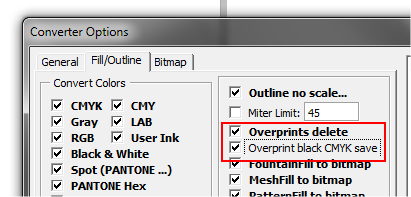
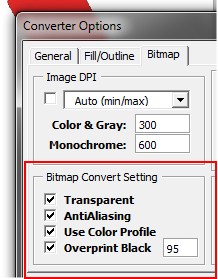
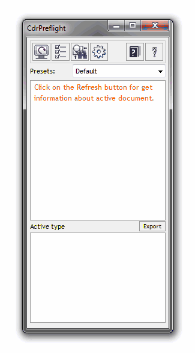
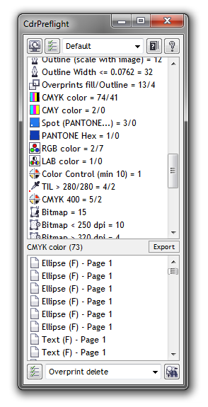

1. Можно ли отлавливать нечерные (не 0-0-0-100) оверпринты и убирать их. Хотелось бы. Знаю что в принципе отлавливать оверпринты можно, но черные меня, да и думаю большинство офсетчиков не волнуют. 2. Можно ли оцмичивать битмепы в соотв с тем есть ли у них прозрачность или нет? Т.е. с прозрачностями - оставить прозрачными, а непрозрачные - оставить непрозрачными. Т.е. чтобы макрос просто для каждого несмик битмепа сделать бы последовательность действий image-mode-cmyk?
Sancho / 26.11.2010, 20:47
1.

2. Мне помнится я уже отвечал на этот вопрос. Функция повторного конвертирования в растр применяется только в ситуации если нужно избавиться от угла поворота. То есть, если картинка повёрнута и установлена функция избавиться от поворота, то происходит выполнение функции ConvertToBitmap, для которой используются настройки из этого блока:
Кстати, народ, вы не забывайте что я всегда принимаю пожелания к последующим версиям. Хотя уже даже мне что то трудно новое придумать ))) Буду реализовывать старые задумки, которые давно хотел, как время будет ))) Ну а Вы, уважаемые пользователи, не забывайте всё же высказываться )))
SLx1 / 03.07.2011, 15:05
Версия Х5 -- слетели красивые иконки в меню -- как вернуть? Спасибо!
SLx1, в Х5 меню устанавливается автоматически, и если рабочая область была перенесена например из Х4 со стам меню, тогда и могло слететь. В любом случае нужно экспортировать все настройки рабочей среды кроме панелей и меню где есть отсылки на кнопки макроса, затем обнулить рабочую среду до дефолтовой и импортировать свои настройки.
SLx1 / 03.07.2011, 17:26/17:35
Ага, получилось, спасибо!
Но вылезла немного другая проблема -- при экспорте не сохраняются шоткаты на макросы -- как быть? Может есть какой хитрый способ? ;)
Sancho / 08.09.2011, 02:19/20:53
В силу определённых обстоятельств, было принято решение заменить главное окно макроса на докер. Вот так примерно он будет выглядеть:

Работать эта версия будет в Х4-Х6 (Х3 больше не будет поддерживаться).
Когда выйдет хотя бы бета даже не спрашивайте, сам не знаю :)
Макрос больше не будет требовать дополнительные библиотеки. Ура!
Главное окно — докер (кто знаком с html и css, смогут менять внешний вид докера)
Конвертр будет находиться в основном окне (в том же докере)
Макрос будет адаптирован под Х4, Х5 и Х6 (когда выйдет)
Нижний список будет показывать каждый цвет отдельным пунктом. Например, для одного объекта с Uniform заливкой и абрисом, теперь будет два пункта вместо одного.
Новая онлайн справка с подробным описанием и примерами.
П.С. Возможно сделаю дополнительные скины/цветовое оформление докера :)


2. Можно ли оцмичивать битмепы в соотв с тем есть ли у них прозрачность или нет?
Т.е. с прозрачностями - оставить прозрачными, а непрозрачные - оставить непрозрачными. Т.е. чтобы макрос просто для каждого несмик битмепа сделать бы последовательность действий image-mode-cmyk?

2. Мне помнится я уже отвечал на этот вопрос.
Функция повторного конвертирования в растр применяется только в ситуации если нужно избавиться от угла поворота. То есть, если картинка повёрнута и установлена функция избавиться от поворота, то происходит выполнение функции ConvertToBitmap, для которой используются настройки из этого блока:

Версия Х5 -- слетели красивые иконки в меню -- как вернуть? Спасибо!
SLx1, в Х5 меню устанавливается автоматически, и если рабочая область была перенесена например из Х4 со стам меню, тогда и могло слететь. В любом случае нужно экспортировать все настройки рабочей среды кроме панелей и меню где есть отсылки на кнопки макроса, затем обнулить рабочую среду до дефолтовой и импортировать свои настройки.
Ага, получилось, спасибо!
Но вылезла немного другая проблема -- при экспорте не сохраняются шоткаты на макросы -- как быть? Может есть какой хитрый способ? ;)
В силу определённых обстоятельств, было принято решение заменить главное окно макроса на докер. Вот так примерно он будет выглядеть:

Работать эта версия будет в Х4-Х6 (Х3 больше не будет поддерживаться).
Когда выйдет хотя бы бета даже не спрашивайте, сам не знаю :)
Ещё одно изменение — префлайт и конвертер теперь в одном окне (докер):

Новости с фронта:
Особенности новой версии:
П.С. Возможно сделаю дополнительные скины/цветовое оформление докера :)
Страницы